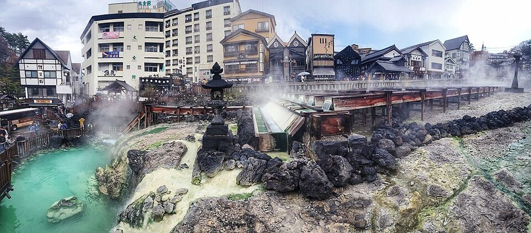
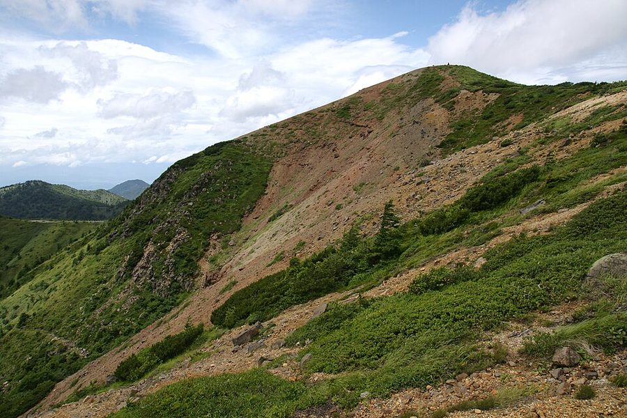
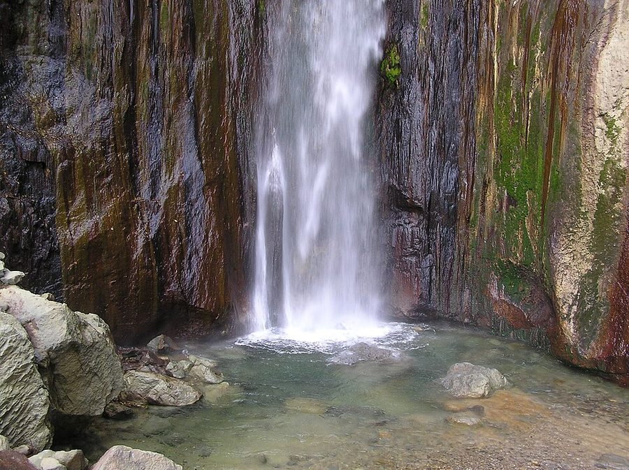

群馬県吾妻郡草津町はどんなまち？
数字で見る🔍群馬県吾妻郡草津町
全国26,033件の寄り道スポットデータから見た群馬県吾妻郡草津町の姿を、全国1,837市区町村との比較で読み解きます。
群馬県吾妻郡草津町の寄り道スポットは合計78件（日帰り温泉64件・道の駅1駅・アイスのお店13件）。
5,791人
人口（2026年7月1日時点推計人口）
49.75km²
面積（境界未定部分あり）
7.6℃
年平均気温（豪雪地帯）
まちの横顔



- 地形と気候: 居住地の平均標高は1,188.9mと町として日本一高く、町役場も標高1,181mで日本一高い町役場です。年平均気温は7.6℃、ケッペンの気候区分では亜寒帯湿潤気候（Dfb）に属し、豪雪地帯に指定されています。冬季は氷点下15℃を下回ることもある寒冷な高原の町です。
- 観光: 町の代名詞である草津温泉のシンボル・湯畑を中心に、草津白根山や常布の滝といった自然、光泉寺などの寺社が点在します。毎年、草津国際音楽アカデミー&フェスティバルや草津国際男子テニスなどの催しも開かれます。
- 文化とくらし: 隣接する嬬恋村で地熱発電所建設計画が浮上した際には温泉の枯渇を懸念する声が上がり、2022年には町内で掘削する場合に町の許可も必要とする条例が制定されました。名湯を守る姿勢そのものが、この町らしさと言えそうです（本記事には独立した「特産」節が無いため、文化・くらしに関する記述で構成）。
寄り道充実度（全国偏差値）
偏差値・順位は、ヨッテコ収録データ（2026年8月時点・26,033件）を市区町村別に集計した施設数の 全国分布（1,837市区町村）から算出。タブをクリックするとカテゴリ別の分析に切り替わります。
日帰り温泉から見た群馬県吾妻郡草津町
町内の日帰り温泉は64件、全国15位（上位0.8%）。——全国的に見ても、上位に入る温泉密度。
64件（全国15位・上位0.8%）
日帰り入浴施設
95.7偏差値
温泉充実度
- 露天風呂がある店は20%（全国平均46%）と全国平均を下回ります。居住地の平均標高が町として日本一高いという土地柄ですが、この指標に関しては控えめな結果です。
- 天然温泉を使う店は97%（全国平均67%）と全国平均を上回ります。年平均気温7.6℃・豪雪地帯という寒冷な気候の土地柄——数字にもそれが表れているようです。
- サウナがある店は9%（全国平均52%）と全国平均を下回ります。居住地の平均標高が町として日本一高いという土地柄ですが、この指標に関しては控えめな結果です。
- 21時以降も営業する店は27%（全国平均40%）と全国平均を下回ります。年平均気温7.6℃・豪雪地帯という寒冷な気候の土地柄ですが、この指標に関しては控えめな結果です。
- 入浴料（判明分23件）の中央値は1,000円。全国（650円）より54%高めです。